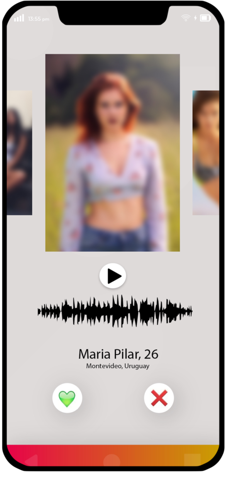

La voz como arma de seducción
Optamos por que los audios sean los que nos describan, los que nos cuenten una historia, los que nos capten la atención.
Si esto sucede, podremos entablar una conversación.

Como en la vida real
La voz también es una herramienta de seducción, como hace años, como lo es ahora.
Amor sin fronteras
QPID tiene claro que el amor no tiene identidad, por eso alentamos a la comunidad LGBT a sentirse libre en nuestra plataforma